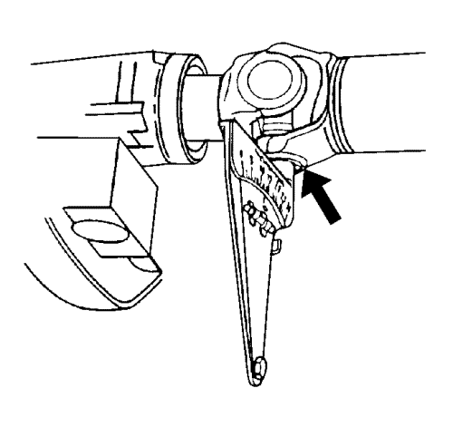

Inspección de sincronización del árbol de transmisión
Herramientas especiales
Inclinómetro del eje motriz J-23498-A, o equivalente
Nota: Este procedimiento de inspección está destinado a comprobar los sistemas de árbol de transmisión con 2 o 3 juntas en U solamente.
El ajuste gradual correcto de un árbol de transmisión se refiere a la alineación relativa de las bridas de horquilla de junta en U entre sí para ofrecer una cancelación adecuada de las juntas en U. Las horquillas deberían estar alineadas directamente en el intervalo especificado en este procedimiento.
- Elevar el vehículo y soportarlo de manera segura. En vehículos con ejes macizos, asegúrese de que el eje motriz está soportado a la altura de circulación -- carrocería del vehículo soportada por los componentes de suspensión. Asegúrese de que las ruedas pueden rotar libremente. Consultar Elevación del vehículo con un gato .
- Ponga el cambio en PUNTO MUERTO.
- Limpie la corrosión o las materias extrañas de los sombreretes de cojinete de junta en U.
- Desmonte cualquier anillo de seguridad de sombrerete de cojinete de junta en U que pueda interferir con la colocación correcta del inclinómetro del eje motriz J-23498-A, o equivalente.

- Inspeccione si el ajuste gradual del árbol de transmisión es correcto.
| 5.1. | Gire el árbol o árboles de transmisión para alinear las bridas de horquilla de árbol verticalmente. |
| 5.2. | Monte el inclinómetro del eje motriz J-23498-A o equivalente en el sombrerete de cojinete de junta en U inferior de la junta en U trasera del árbol. El inclinómetro del eje motriz J-23498-A, o equivalente debe estar alineado de forma perpendicular con el árbol de transmisión. |
| 5.3. | Coloque la línea del indicador del inclinómetro del eje motriz J-23498-A o equivalente en 15, la referencia horizontal. |
| 5.4. | Gire ligeramente el árbol de transmisión para centrar la burbuja con el indicador. La junta en U está ahora vertical. |
| 5.5. | Sin alterar la configuración del inclinómetro del eje motriz J-23498-A o equivalente, desmonte el inclinómetro del eje motriz J-23498-A o equivalente del sombrerete del cojinete de junta en U trasera. |
| 5.6. | Monte el inclinómetro del eje motriz J-23498-A o equivalente en el sombrerete de cojinete de junta en U inferior de la junta en U delantera del mismo árbol. |
| 5.7. | Observe y registre la lectura de la junta en U delantera con el inclinómetro del eje motriz J-23498-A o equivalente todavía situado en 15, la referencia horizontal. |
- Para sistemas de transmisión con 3 juntas en U, gire los árboles 1/4 de vuelta y repita los pasos 5.1-5.7 para el otro árbol de transmisión.
- Si la diferencia entre las juntas en U delantera y trasera del árbol de transmisión de horquilla soldada es 3 grados o menos, el árbol de transmisión está bien ajustado de forma gradual.
- Si la diferencia entre las juntas en U delantera y trasera de un árbol de transmisión con horquilla soldada es más de 3 grados, el árbol de transmisión está mal construido o se ha dañado al haberse retorcido. Consultar Corrección de sincronización del árbol de transmisión .
- Si la diferencia entre la horquilla soldada y la horquilla deslizante de un árbol de transmisión es 1,5 grados o menos, el árbol de transmisión está bien ajustado de forma gradual.
- Si la diferencia entre la horquilla soldada y la horquilla deslizante de un árbol de transmisión es más de 1,5 grados, el árbol de transmisión está mal construido o se ha dañado al haberse retorcido. Consultar Corrección de sincronización del árbol de transmisión .
| © Copyright Chevrolet Europe. All rights reserved |